Stage 1 Request
This is the Second Phase of Procurement Process. Generated Pre-Contract(s) seen here. User need to add Schedule Items. User can also add Reference Documents. Further, Request(s) will be moved to Stage 1 Approval Screen.
You can view and perform the following in the Stage 1 Request Section:
- Search the Existing Records
- View and Edit the Schedule Items
- Open the Internal Stage1 Request Window
- Manpower Details
- Material Details
- Plant Details
- Service Details
- Project Sub-Contract Details
- View the Cost Budget
- Send the Pre-Contract for Approval
- View the Approver Details
- Add Reference Documents
Search Existing Records:
This section helps you to search the existing records.
To search the existing records, do the following.
- Select the EPS Name or Project Name and the Enterprise Projects window opens as shown in the figure.
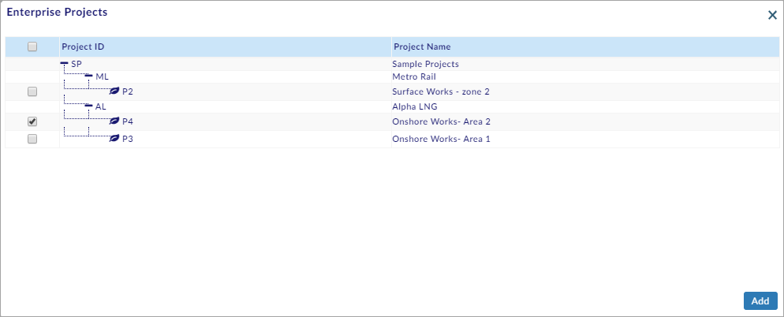
- On the Enterprise Projects window, select the project and click .
- Select the internal status from the Internal Status drop-down menu.
Note:
- User can select from the following, from the Internal Status drop-down menu.
- Draft
- Returned With Comments
- Select From Date and To date.
- Select Login User Records to search the records of the logged-in user (or select All User Records to search the records of all the users).
- Click Search available on the right side of the screen.
- The search results are shown on the screen as shown in the figure.
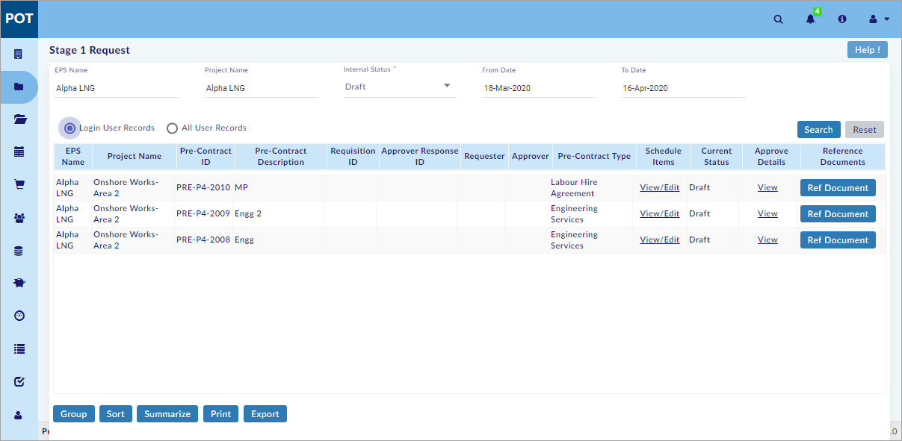
Note:
- Already created records are available on the search results, without performing a search.
- Pre-contracts not available for given search criteria warning message is shown, if Pre-contracts are not available for the selected project, internal status or date range.
- Login User Records is selected by default.
- To Date is the current date and From Date is one month before the current date by default.
- Click Reset to reset the screen to the default view.
You have successfully searched the existing records.
View and Edit the Schedule Items:
This section helps you to view and edit the schedule items.
Open Internal Stage1 Request Window:
This sub-section helps you to open the internal stage1 request window.
To open the internal stage1 request window, do the following.
- Search the existing records. (See the Search Existing Records Section above)
- Select View/Edit as shown in the figure.
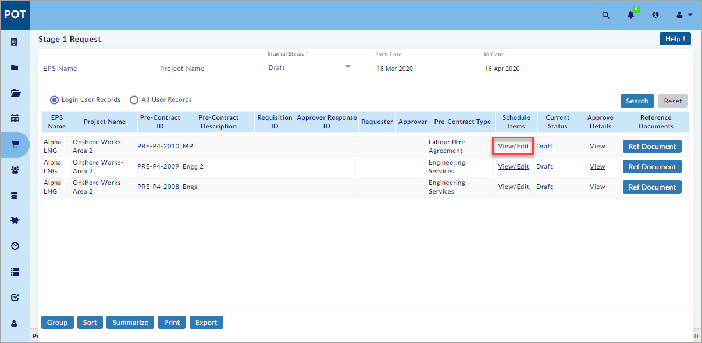
- The Internal Stage1 Request window opens.
You have successfully opened the internal stage1 request window.
Manpower Details:
This sub-section helps you to enter the manpower details.
To enter the manpower details, do the following.
- Open the internal stage1 request window. (See the Open Internal Stage1 Request Window sub-section above)
- Click
 to add multiple rows.
to add multiple rows. - The row(s) are added as shown in the figure.
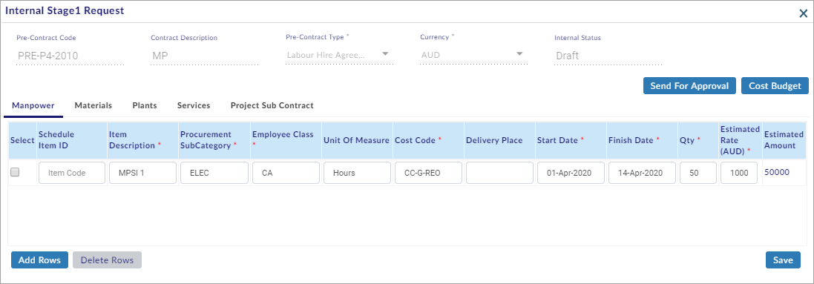
- Enter/select all the mandatory details.
- Click
 to save the manpower details.
to save the manpower details.
Note:
- Central Library – Procurement Category is displayed in Procurement Sub-Category.
- Central Library – Employee Classification is displayed in Employee Class.
- Projects – Project Budgets – Cost – Original Budget – Labour Column – Cost Codes which has value other than “0” will be displayed here for selection.
- Select and click
 to delete multiple rows.
to delete multiple rows.
You have successfully entered the manpower details.
Material Details:
This sub-section helps you to enter the material details.
To enter the material details, do the following.
- Open the internal stage1 request window. (See the Open Internal Stage1 Request Window sub-section above)
- Select the Materials sub-tab.
- The Materials sub-tab opens.
- Click and the Central Material Classifications window opens as shown in the figure.
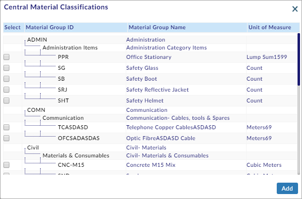
- Select the material(s) and click (Use the scroll bar to view more materials).
- The material(s) are added as shown in the figure.

- Enter/select all the mandatory details.
- Click
 to save the material details.
to save the material details.
Note:
- Central Library – Procurement Category is displayed in Procurement Sub-Category.
- Central Library – Material Classification is displayed in Material Class.
- Projects – Project Budgets – Cost – Original Budget – Materials Column – Cost Codes which has value other than “0” will be displayed here for selection.
- Central Library –Warehouse List, Projects - Project Library - Warehouse list is displayed in Delivery Place.
- Unit of Measure gets auto-filled on material selection.
- Select and click
 to delete multiple rows.
to delete multiple rows.
You have successfully entered the material details.
Plant Details:
This sub-section helps you to enter the plant details.
To enter the plant details, do the following.
- Open the internal stage1 request window. (See the Open Internal Stage1 Request Window sub-section above)
- Select the Plants sub-tab.
- The Plants sub-tab opens as shown in the figure.
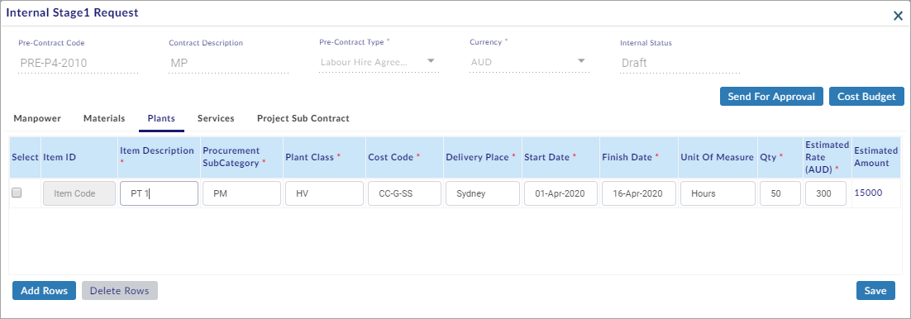
- Click
 to add multiple rows.
to add multiple rows. - Enter/select all the mandatory details.
- Click
 to save the plant details.
to save the plant details.
Note:
- Central Library – Procurement Category is displayed in Procurement Sub-Category.
- Central Library – Plant Classification is displayed in Plant Class.
- Projects – Project Budgets – Cost – Original Budget – Plants Column – Cost Codes which has value other than “0” will be displayed here for selection.
- Select and click
 to delete multiple rows.
to delete multiple rows.
You have successfully entered the plant details.
Service Details:
This sub-section helps you to enter the service details.
To enter the service details, do the following.
- Open the internal stage1 request window. (See the Open Internal Stage1 Request Window sub-section above)
- Select the Services sub-tab.
- The Services sub-tab opens as shown in the figure.
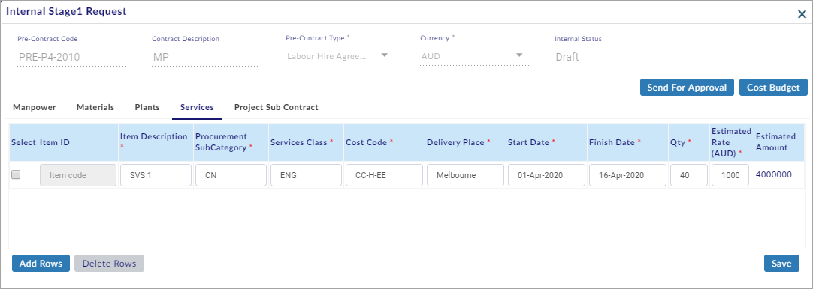
- Click
 to add multiple rows.
to add multiple rows. - Enter/select all the mandatory details.
- Click
 to save the service details.
to save the service details.
Note:
- Central Library – Procurement Category is displayed in Procurement Sub-Category.
- Central Library – Service Classification is displayed in Services Class.
- Projects – Project Budgets – Cost – Original Budget – Others Column – Cost Codes which has value other than “0” will be displayed here for selection.
- Select and click
 to delete multiple rows.
to delete multiple rows.
You have successfully entered the service details.
Project Sub-Contract Details:
This sub-section helps you to enter the project sub-contract details.
To enter the project sub-contract details, do the following.
- Open the internal stage1 request window. (See the Open Internal Stage1 Request Window sub-section above)
- Select the Project Sub Contract sub-tab.
- The Project Sub Contract sub-tab opens.
- Click and the Scope of Works window opens as shown in the figure.
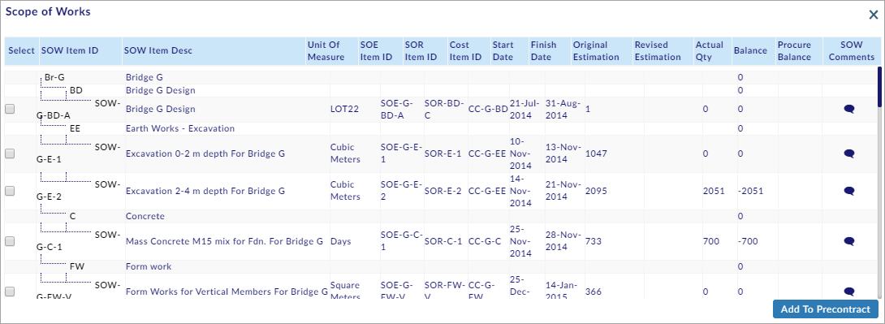
- Select the SOW item(s) and click (Use the scroll bar to view more SOW items).
- The SOW item (s) are added as shown in the figure.
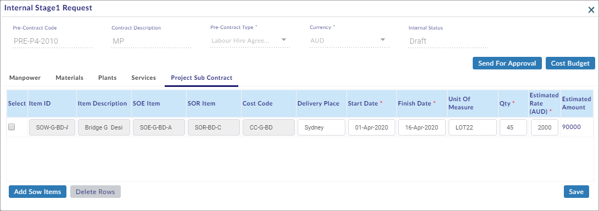
- Enter/select all the mandatory details.
- Click
 to save the project sub-contract details.
to save the project sub-contract details.
Note:
- Project Library – SOW Items will be displayed in Item ID.
- Item Description, SOE Item, SOR Item, Cost Code, and Unit of Measure gets auto-filled with SOW Item Selection.
- Select and click
 to delete multiple rows.
to delete multiple rows.
You have successfully entered the project sub-contract details.
View the Cost Budget:
This sub-section helps you to view the cost budget.
To view the cost budget, do the following.
- Open the internal stage1 request window. (See the Open Internal Stage1 Request Window sub-section above)
- Enter the required details in the Manpower tab, Materials tab, Plants tab, Services tab and, Project Sub-Contract tab. (See the above sub-sections)
- Click and the Cost Code wise Estimates and Budgets window opens as shown in the figure.
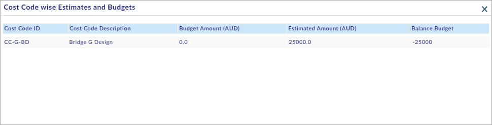
You have successfully viewed the cost budget.
Send Pre-Contract for Approval:
This sub-section helps you to submit the pre-contract for approval.
To submit the pre-contract for approval, do the following.
- Open the internal stage1 request window. (See the Open Internal Stage1 Request Window sub-section above)
- Enter the required details in the Manpower tab, Materials tab, Plants tab, Services tab and, Project Sub-Contract tab. (See the above sub-sections)
- Click
 and the Internal Stage1 Request & Approval window opens as shown in the figure.
and the Internal Stage1 Request & Approval window opens as shown in the figure.
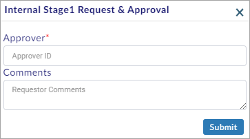
- Select the Approver ID and the User Details window opens as shown in the figure.
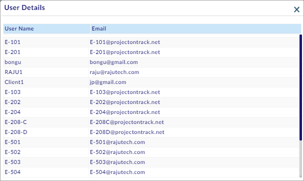
Note:
- Admin – User List will be displayed in User Details window.
- Select the approver and write requestor comments in Comments.
- Click
 to send the pre-contract for approval.
to send the pre-contract for approval.
You have successfully submitted the pre-contract for approval and viewed/edited the schedule items.
View the Approver Details:
This section helps you to view the approver details.
To view the approver details, do the following.
- Search the existing records. (See the Search Existing Records Section above)
- Select View as shown in the figure.
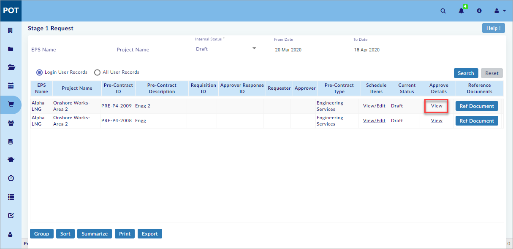
You have successfully viewed the approver details.
Add Reference Documents:
This section helps you to add the reference documents.
To add the reference documents, do the following.
- Search the existing records. (See the Search Existing Records Section above)
- Click
 and the Reference Documents window opens as shown in the figure.
and the Reference Documents window opens as shown in the figure.

- Click to create Single/Multiple Reference Document(s).
- Enter Description and Version.
- Click
 to choose the document from your computer.
to choose the document from your computer. - Click
 to save the Reference Document(s).
to save the Reference Document(s).
Note:
- Select the Reference Document(s) and click
 to delete Single/Multiple Reference Document(s).
to delete Single/Multiple Reference Document(s).
You have successfully added the reference documents.